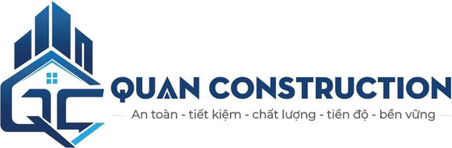

Công ty TNHH Đầu tư và Phát triển Quan Construction – đơn vị hoạt động trong lĩnh vực xây dựng tại Vĩnh Long.
Liên hệ báo giáQuan Construction được thành lập ngày 03/04/2026, vốn điều lệ 1.000.000.000 đồng, mã số thuế 2100714058. Chúng tôi tập trung vào thi công, dự toán và quản lý chất lượng công trình với đội ngũ kỹ sư có chuyên môn về kinh tế xây dựng.
Nhà ở, công trình dân dụng và công nghiệp.
Bóc tách khối lượng, lập dự toán, thanh quyết toán.
Quản lý tiến độ, chất lượng và chi phí công trình.
Đang cập nhật hình ảnh các công trình.
Số 47 hẻm 82 đường Phạm Ngũ Lão, khóm Sa Bình, phường Long Đức, tỉnh Vĩnh Long